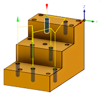

Lorsque cette option est désactivée
Le premier perçage figure
sur la hauteur Z la plus élevée.
Lorsque cette option est activée
Le premier perçage figure
sur la hauteur Z la moins élevée.
Perçages comportant plusieurs hauteurs de départ Z.
Modifie l'ordre de tri, de la hauteur la plus élevée à la moins élevée, ou de la moins élevée à la plus élevée. Si cette option est désactivée, l'ordre défini est le suivant: perçages à la hauteur Z la plus élevée, puis descente progressive vers les hauteurs inférieures. Cochez cette case afin d'inverser cet ordre.
 |
|
Lorsque cette option est désactivée |
Lorsque cette option est activée |